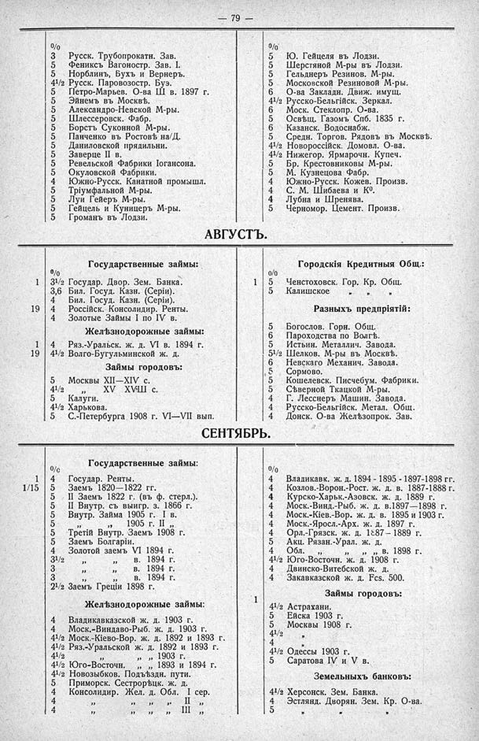

Лист источника 125
Скан

Распознанный текст
— 79 —
%/0
3 Русск. Трубопрокатн. Зав.
5 Фениксъ Вагоностр. Зав. I.
5 Норблинъ, Бухъ и Вернеръ.
4 1/2 Русск. Паровозостр. Буэ.
5 Петро-Марьев. О-ва Ш в. 1897 г.
5 Эйнемъ въ Москвѣ.
5 Александро-Невской М-ры.
5 Шлессеровск. Фабр.
5 Борстъ Суконной М-ры.
5 Панченко въ Ростовѣ на/Д.
5 Даниловской прядильни.
5 Заверце II в.
5 Ревельской Фабрики Іогансона.
5 Окуловской Фабрики.
4 Южно-Русск. Канатной промышл.
5 Тріумфальной М-ры.
5 Луи Гейеръ М-ры.
5 Гейцель и Куницеръ М-ры.
5 Громанъ въ Лодзи.
%/0
5 Ю. Гейцеля въ Лодзи.
5 Шерстяной М-ры въ Лодзи.
5 Гельднеръ Резинов. М-ры.
5 Московской Резиновой М-ры.
6 О-ва Закладн. Движ. имущ.
4 1/2 Русско-Бельгійск. Зеркал.
6 Моск. Стеклопр. О-ва.
5 Освѣщ. Газомъ Спб. 1835 г.
6 Казанск. Водоснабж.
5 Средн. Торгов. Рядовъ въ Москвѣ.
4 1/2 Новороссійск. Домовл. О-ва.
4 1/2 Нижегор. Ярмарочн. Купеч.
5 Бр. Крестовниковы М-ры.
5 М. Кузнецова Фабр.
4 Южно-Русск. Кожев. Произв.
4 С. М. Шибаева и Кº.
4 Лубна и Шренява.
5 Черномор. Цемент. Произв.
АВГУСТЪ.
Государственные займы:
%/0
3 1/2 Государ. Двор. Зем. Банка.
3,6 Бил. Госуд. Казн. (Серіи).
4 Бил. Госуд. Казн. (Серіи).
4 Россійск. Консолидир. Ренты.
4 Золотые Займы I по IV в.
Желѣзнодорожные займы:
4 Ряз.-Уральск. ж. д. VI в. 1894 г.
4 1/2 Волго-Бугульминской ж. д.
Займы городовъ:
5 Москвы XII—XIV с.
4 1/2 „ XV—XVII с.
5 Калуги.
4 1/2 Харькова.
5 С.-Петербурга 1908 г. VI—VII вып.
Городскія Кредитныя Общ.:
%/0
5 Ченстоховск. Гор. Кр. Общ.
5 Калишское „ „ „
Разныхъ предпріятій:
5 Богослов. Горн. Общ.
6 Пароходства по Волгѣ.
5 Истьин. Металлич. Завода.
5 1/2 Шелков. М-ры въ Москвѣ.
6 Невскаго Механич. Завода.
5 Сормово.
5 Кошелевск. Писчебум. Фабрики.
5 Сѣверной Ткацкой М-ры.
4 Г. Лесснеръ Машин. Завода.
4 Русско-Бельгійск. Метал. Общ.
4 Донск. О-ва Желѣзопрок. Зав.
СЕНТЯБРЬ.
Государственные займы:
%/0
4 Государ. Ренты.
5 Заемъ 1820—1822 гг.
5 II Заемъ 1822 г. (въ ф. стерл.).
5 II Внутр. съ выигр. з. 1866 г.
5 Внутр. Займа 1905 г. I в.
5 „ 1905 г. II „
5 Третій Внутр. Заемъ 1908 г.
5 Заемъ Болгаріи.
4 Золотой заемъ VI 1894 г.
3 1/2 „ „ в. 1894 г.
3 „ „ в. 1894 г.
3 „ „ в. 1894 г.
2 1/2 Заемъ Греціи 1898 г.
Желѣзнодорожные займы:
4 Владикавказской ж. д. 1903 г.
4 Моск.-Виндаво-Рыб. ж. д. 1903 г.
4 1/2 Моск.-Кіево-Вор. ж. д. 1892 и 1893 г.
4 1/2 Ряз.-Уральской ж. д. 1892 и 1893 г.
4 1/2 „ „ „ 1903 г.
4 1/2 Юго-Восточн. „ „ 1893 и 1894 г.
4 1/2 Новозыбков. Подъѣздн. пути.
5 Приморск. Сестрорѣцк. ж. д.
4 Консолидир. Жел. д. Обл. I сер.
4 „ „ „ „ II „
4 „ „ „ „ III „
%/0
4 Владикавк. ж. д. 1894 - 1895 - 1897-1898 гг.
4 Козлов.-Ворон.-Рост. ж. д. в. 1887-1888 г.
4 Курско-Харьк.-Азовск. ж. д. 1889 г.
4 Моск.-Винд.-Рыб. ж. д. в.1897—1898 г.
4 Моск.-Кіев.-Вор. ж. д. в. 1895 и 1903 г.
4 Моск.-Яросл.-Арх. ж. д. 1897 г.
4 Орл.-Грязск. ж. д. 1887— 1889 г.
5 Акц. Рязан.-Урал. ж. д.
4 Обл. „ „ „ в. 1898 г.
4 1/2 Юго-Восточн. ж. д. 1908 г.
4 Двинско-Витебской ж. д.
4 Закавказской ж. д. Fcs. 500.
Займы городовъ:
4 1/2 Астрахани.
5 Ейска 1903 г.
5 Москвы 1908 г.
4 1/2 „
4 „
4 1/2 Одессы 1903 г.
5 Саратова IV и V в.
Земельныхъ банковъ:
4 1/2 Херсонск. Зем. Банка.
4 Эстлянд. Дворян. Зем. Кр. О-ва.
5 „ „ „ „ „
1
19
1
19
1
5
1
1/15
1